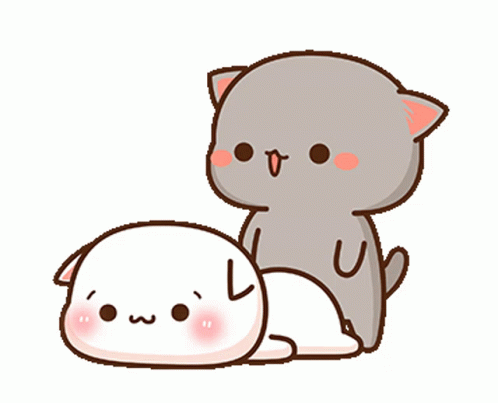
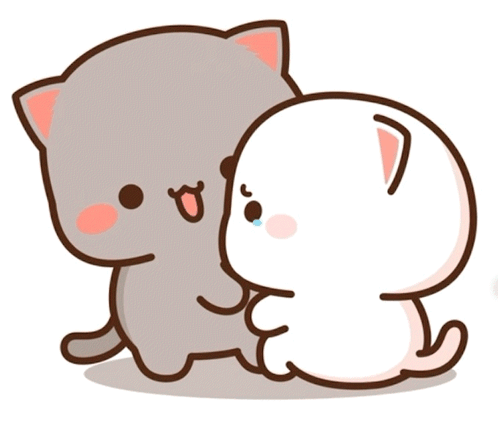
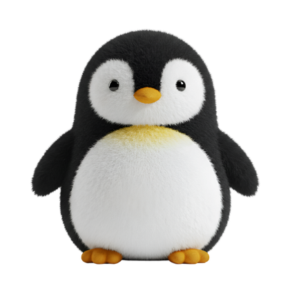
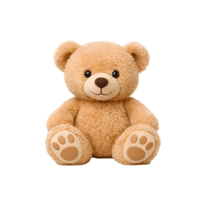
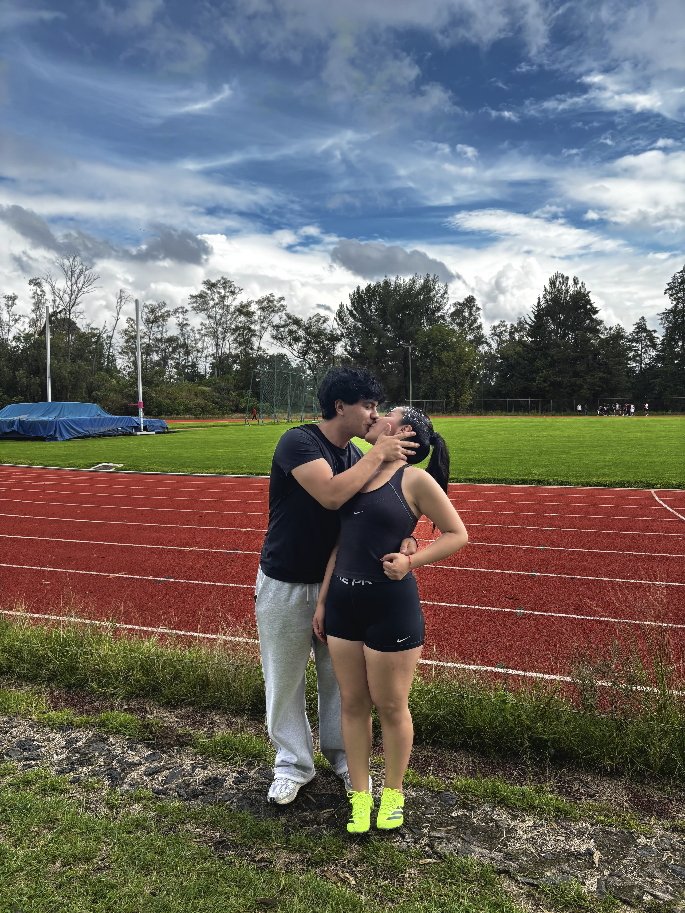
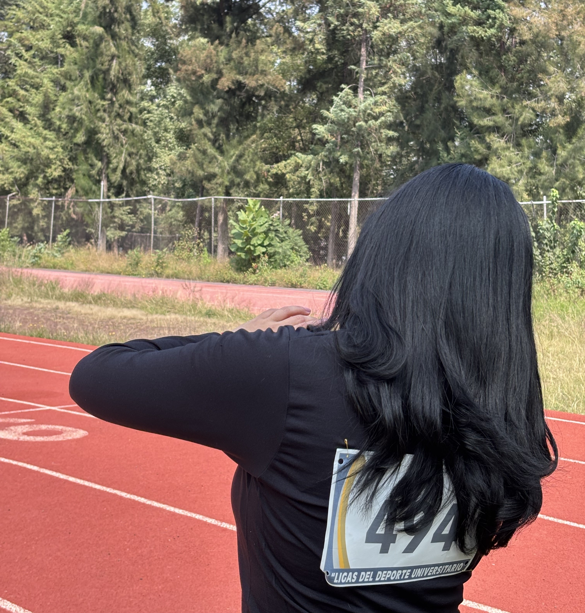
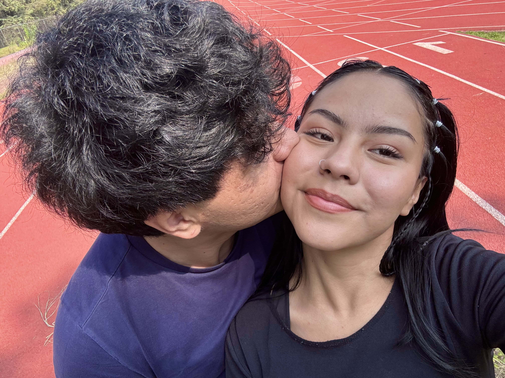
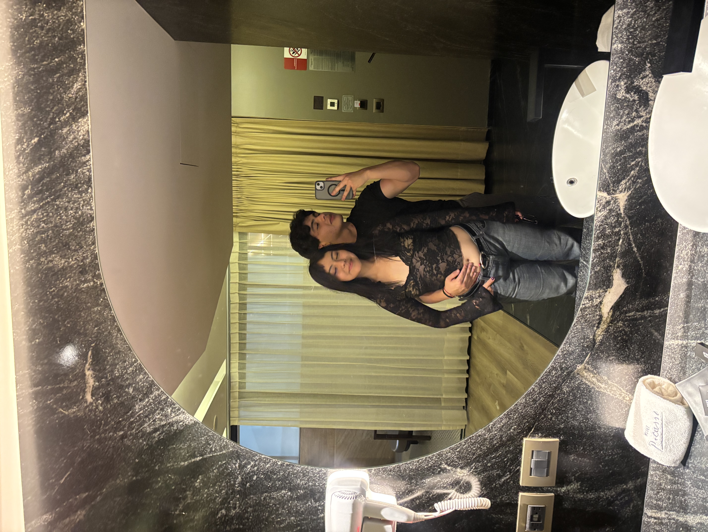
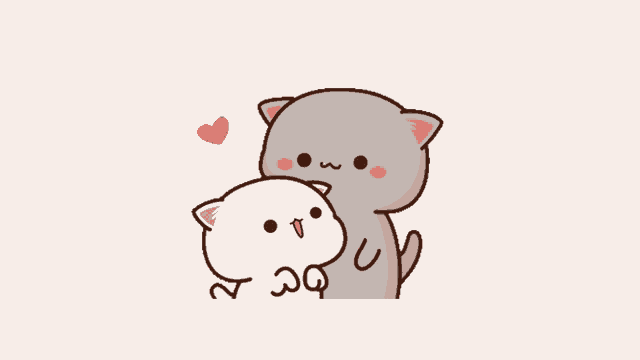

Para ti
Toca para abrir
Hola pedacito de cielo, hice esta página web para ti. Solamente quiero recordarte que no hay un amor más grande en el mundo que el que yo siento por ti, y que no hay mujer más impecable y motivadora como tú.
Que no hay nada que me haga querer enamorarte mucho más cada día.
Sé que amas los detalles, y amo que ames que te haga cosas tontas como esta. No verte durante tanto tiempo me hace querer expresarte lo mucho que te amo y lo mucho que te extraño de cualquier manera posible.

Entiendo que muchas veces no estamos al 100% de batería, a veces hay problemas personales y en conjunto, o incluso a veces simplemente no, pero eso no significa que me alejaré de ti. Al contrario, te cuidaré desde la distancia y te amaré más cada segundo que me quede del resto de mi corta vida.


Yo quiero ser el encargado de hacerte saber que el amor no duele, se sufre, pero no lastima, así como quiero que tú me enseñes lo que es sentir amor genuino desde el corazón. Aunque ya sabemos amarnos, quiero saber más de ti, quiero aprender todos los días algo nuevo y conocer desde el dato más tierno hasta el más nauseabundo de ti (erúctame en la cara, por favor).
Me gusta sorprenderte, buscar la manera de sacarte una sonrisa y encontrar pequeños motivos para recordarte lo mucho que me importas, la prioridad tan grande que eres en mi vida. Quizá para otras personas sean simples detalles, pero para mí son algo especial, porque detrás de cada uno hay un poquito de lo que siento por ti.
Me gusta regalarte cosas, aunque sean pequeñas. Me gusta acordarme de ti cuando veo algo que te gustaría, algo que te haga decir "owww te amo, tierno", porque para mí esa pequeña sonrisa me hace darme cuenta de que todo ha valido la pena.
Siempre me invento alguna excusa para hacerte llegar un poquito de cariño, aunque no siempre encuentro la manera de explicarte cuánto me importas, así que intento hacerlo de otras formas. A veces una canción dice lo que no me atrevo a decirte, y un regalo termina llevando sentimientos que no caben en un mensaje.
Hoy puedo decir que no me da miedo que descubras que detrás de cada detalle hay alguien que está enamorado de ti.
¿Y qué?
¿Cómo voy a sentirme culpable de estar enamorado de alguien tan increíble como tú? Alguien tan dedicada, tan sentimental, tan motivadora, tan directa, tan graciosa, tan expresiva pero tan tímida a la vez, tan tierna, tan hermosa en cuerpo y alma, tan... tan tú.
Te amo más de lo que a veces puedo expresar con palabras. Amo cada pequeño detalle de ti: tu forma de ser, tu forma de hablar, tus chistes rancios e incluso esas pequeñas cosas que tú no notas, pero que para mí son lo más hermoso que hay en el mundo.
Quiero que entiendas que haga lo que haga, cualquier pequeña tontería que haga por ti no es para que me quieras. No estoy intentando comprar tu cariño ni acumulando puntos, y mucho menos son "favores" que tengas que devolver. Son muestras de lo que siento por ti.
Y claro que me gustaría que algún día también hagas cosas por mí, pero no quiero que lo hagas por obligación, ni quiero que me quieras solamente porque yo te quiero. Si te digo que te quiero, es para que sepas que te quiero.
Para que sepas que te amo. Son 2 palabras muy fuertes, ¿no crees? "Te amo": la definición es un sentimiento profundo, sincero y comprometido hacia otra persona. Implica una conexión emocional fuerte que va más allá del afecto cotidiano.
¿Pero hay algo más grande que eso? Investigué si existe algo más profundo que un "Te amo":
"Eres mi hogar", "Amo quien soy cuando estoy contigo", "Te admiro", "Haces que el mundo sea un lugar mejor", "Gracias por existir". Mientras más buscaba una definición de lo que siento, más me daba cuenta de que no hay forma de decirte lo que siento por ti. Entonces solo me queda demostrártelo, esperando que puedas entender la magnitud de esas palabras.

Quiero hacerte sentir que alguien te elige todos los días.
Te amo.
Corazón de melón, amorcito, chiquita hermosa, mujer de mi vida, mi amor.




